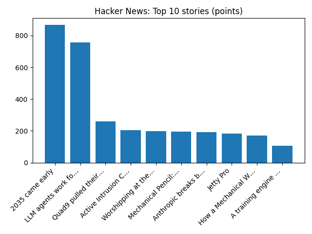

DR Congo says military aircraft missing as rebels claim to shoot down plane
BBC — World
YOUR DAILY INTELLIGENCE BRIEF · 2026-11-24
Global watch: DR Congo says military aircraft missing as rebels claim to shoot down plane, Nigerian monarch, 92, suspended after sexual assault claims.
Northern Virginia: Thomas Simeone Named a 2026 Top Lawyer by Northern Virginia Magazine - EIN Presswire, Belmont Bay Rehabilitation Center unveils renovated Woodbrid... - InsideNoVa.

Global coverage includes DR Congo says military aircraft missing as rebels claim to shoot down plane; Nigerian monarch, 92, suspended after sexual assault claims; Shein to pay $100 million to settle US shipping, customer service claims - Reuters. Local coverage includes Thomas Simeone Named a 2026 Top Lawyer by Northern Virginia Magazine - EIN Presswire; Belmont Bay Rehabilitation Center unveils renovated Woodbrid... - InsideNoVa.

Bongboldo
Bongboldo is a village in the Bassar Prefecture in the Kara Region of north-western Togo.
https://en.wikipedia.org/wiki/Bongboldo
Galaxies Battle in the NGC 7771 Group
Runs so far today: 1